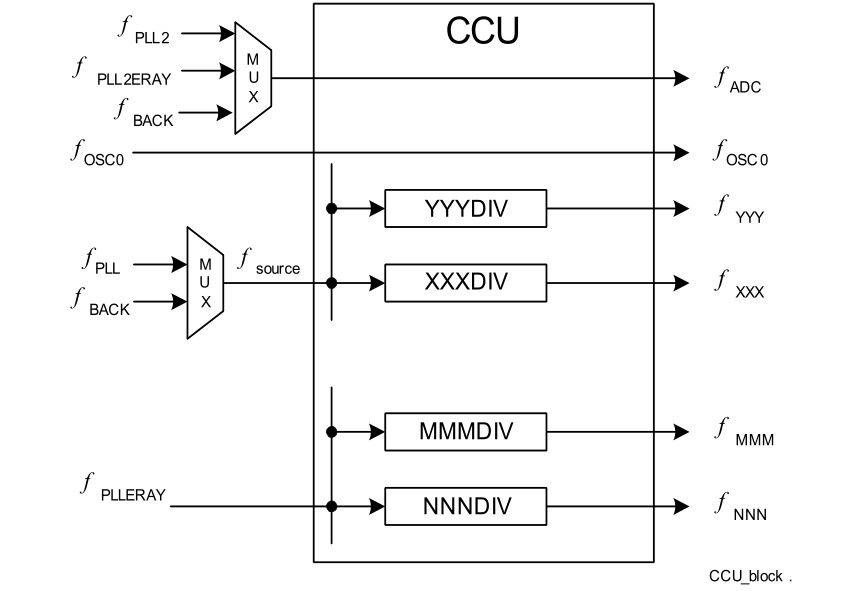

TC275时钟系统由4个模块组成
- 时钟源
- 时钟倍频
- 时钟分频
- 单独的时钟配置
时钟源
TC275有几种时钟源，可用于完整的设备，主要和次要的部分，或者专用的模块，这取决于来源和配置（这段没怎么看懂，以后再更改）。
需要注意的是不同的时钟源可以平行用于不同的设备，但同一个外设同一时间只能使用一个时钟源。
振荡电路
振荡电路设计为可与外部的晶体/陶瓷谐振器或外部稳定时钟源一起工作的电路，该电路包括一个反相放大器，其输入为XTAL1，输出XTAL2为一个集成反馈电阻。
外部时钟输入模式
这种方式，外部时钟直接输入到XTAL1引脚，XTAL2留空，需要注意的是输入频率要大于或等于PLL VCO的输入频率（8-24MHz）,电路如下图：
时钟振荡电路
时钟振荡电路有两种模式，带外部组件和不带外部组件。两种模式的电路图如下：
振荡电路控制寄存器
寄存器结构如下：
在使用外部振荡器作为时钟源时，可以通过SSW（start_up）进行配置，或者在SSW执行之后进行配置。
通过SSW进行配置
要通过SSW配置OSCCON寄存器，必须将FLASH0_PROCOND.OSCCFG置为1。在这种模式下，SSW从FLASH0_PROCOND加载OSCCON配置数据。所需数据要与UCB_DFlash一起存在偏移0处。在此种模式下，OSCCON.MODE和OSCCON.CAPxEN以及位
OSCCON.APREN是可控的。
如果禁用的振荡器，则必须通过将位字段OSCCON.MODE = 00 B设置为使能振荡器。
如果使用内部的电容器，则可以通过OSCCON.CAPxEN位使能。
在SSW之后进行配置
除了在SSW中进行配置之外，还可以在SSW执行之后进行配置，可直接操作OSCCON寄存器，但OSSCON受ENDINIT安全保护，在使用之前应该解除保护。
XTAL1作为一般的输入针脚
通过配置OSCCON.XD1和OSCCON.X1DEN可以将XTAL1作为一般的输入针脚。
XTAL2不能配置为输入针脚。
振荡器看门狗
振荡器看门狗用来检测时钟输入频率太高或者时钟输入丢失。看门狗监视来自OSC的输入时钟频率, 在PLL预分频器模式和正常模式下，强制要求稳定且定义的输入频率。在自由运行模式下，不需要输入频率，因此，每次系统复位后都运行在此模式。
对于正常模式，要求输入的频率在在某个频率范围内，才能从VCO部件获得稳定的主时钟。
期望的时钟频率由OSCCON.OSCVAL选择，看门狗OSC_WDT监视频率是否太高或太低。
监视的频率是，它是通过计算得出。
分频器值OSCCON.OSCVAL必须以f_{oscref}为2.5MHz的方式进行选择。
注意：f_{oscref}必须在2MHz至3MHz的范围内，并且应尽可能接近2.5MHz。
所以可以反推出来OSCVAL的值。
整个检测步骤为：
- 设置OSCCON.MODE = 0使能振荡器频率输入，并且不进入节能模式
- 通过上面公式算出OSCCON.OSCVAL的值。
- 设置OSCCON.OSCRES = 1来重置振荡器看门狗
- 比较OSCCON.PLLLV 和OSCCON.PLLHV是否为0来判断输入频率是否满足要求。
备用时钟源
TC275内部提供了备用的时钟源100MHz，该时钟稳定但是可靠，可做为系统时钟。它提供的精度低于外部时钟。不能禁用或启用备用时钟，或者用其它的方式控制备用时钟。可通过CCUCON0和CCUCON1设置使用备用时钟源。
时钟倍频
典型的CPU运行速度大约是晶振的10倍。所以需要提升时钟频率。
TC275提供了两个锁相环（Phase Lock Loop），PLL和PLL_ERAY。
PLL
PLL将低频的外部时钟信号转换为高速的内部时钟。PLL还具有故障安全逻辑，可检测不正确的外部时钟信号，执行紧急的措施。
PLL功能描述
PLL结构如下：
PLL有三种可以选择的模式：
- 一般模式
- 预分频模式
- 自由运行模式
一般模式
先经过P分频，再N倍频，最后K2，K3分频产生。
选择一般模式
- PLLCON0.VCOBYP = 0
- PLLCON0.CLRFINDIS = 1
确认进入预分频模式 - PLLSTAT.FINDIS = 0
- PLLSTAT.VCOBYST = 0
- PLLSTAT.VCOLOCK = 1
- OSCCON.PLLLV = 1
- OSCCON.PLLHV = 1
预分频模式
只经过K1分频即为预分频模式。
选择预分频模式：
- PLLCON0.VCOBYP = 1
判断进入预分频模式： - PLLSTAT.VCOBYST = 1
由于使用了输入频率，建议检查OSCCON.PLLLV和OSCCON.PLLHV以确定输入范围是否满足。
自由运行模式
系统复位之后就运行在自由运行模式。在这种模式下，被切断，由VCO（压控振荡器）产生的作为系统时钟源（150MHz）,只被K2和K3分频。
选择自由运行模式需要设置寄存器：
- PLLCON0.VCOBYP = 0
- PLLCON0.SETFINDIS = 1
判断是否进入自由运行模式： - PLLSTAT.FINDIS = 1
- PLLSTAT.VCOBYST = 0
清除PLLCON0.OSCDISCDIS位会在VCO失锁事件时自动进入自由运行模式，以保证系统有时钟可用。
PLL_ERAY
略
分频
能过前两部分的配置，定义了系统的时钟，现在，要将时钟分配给单个的模块，各个CPU，和模块。以使他们都在最优的性能和功耗运行。
系统分为几个子时钟域，可以分别配置时钟速度。但每个子时钟域也有一些限制。从时钟角度看，每个子时钟域都定义一个逻辑单元。
时钟分配通过时钟控制单元（CCU）完成。CCU接受两个PLL（和，备份时钟和，这些时钟可以直接转发也可以分频到子时钟域。
TC275的时钟系统和子系统时钟输入如下
时钟控制单元（CCU）
时钟控制单元示意图如下：

对大多数时钟，都提供了一个线性分频器，该分频器由XXXDIV字段控制。
对于CPU的时钟，实现了更复杂的分频器。 这样可以更好地控制各个CPU的时钟频率变化。 这种机制可以使频率变化适应应用定义的特定电流极限。
调试块还有一个固定的参考时钟REFCLK1/2，它将主时钟除以24。这使OCDS可以独立于所选的SRI和SPB时钟速度生成时间戳。
时钟分频器的限制
根据下表和公式可以算出和设置每个模块的时钟频率。
CCU寄存器
系统中的任何CPU均可访问CCU寄存器。但是，建议仅使用一个CPU来控制时钟。由于CPU0是复位后的活动CPU和可用CPU，因此这是合理的选择。
时钟分频涉及到的寄存器有CCUCON0,CCUCON1,CCUCON5,CCUCON2,CCUCON6,CCUCON7,CCUCON8
各子模块默认总线频率
单独的时钟生成
每个模块提供一些单独的时钟控制选项。 大多数模块为此提供了一个时钟控制（CLC）寄存器。
时钟控制寄存器(CLC)
每个模块的下面功能与CLC相关
- 外设时钟的静态开关控制
- 休眠模式下的模块时钟行为
模块开关控制
如果一个模块在应用中没有被使用，可以设置CLC的DISR来关闭。在外设中有一个运行模式时钟分频器RMC，另一个关闭模块的方法就是设置RMC为0。
DISS位指定模块是关闭（DISS=1）还是打开（DISS=0）。
禁止写入禁用的模块除CLC以外的寄存器，这将导致相应的总线控制单元（BCU）产生总线错误。读禁用模块的寄存器是允许的。
启用模块时需要判断DISS是否清除，在启用过程中写入模块的其它寄存器也会引起总线错误。
睡眠模式
CLC中的EDIS指定模块是否进入睡眠模式。
进入禁用模式
设置DISR位，设置DISR位会有操作时间，需要判断DISS位是否置位，然后进行下一步操作。
模块时钟分频器
RMC位可以设置模块相对于的时钟分频。公式如下：
如果没有RMC位，模块时钟等于.
下面的表列出了TC275外设的CLC位的支持情况。
时钟监视
可以设置CCUCON3，CCUCON4进行等时钟频率的监视。
具体见手册7.1.5节
时钟的紧急行为
如果有时钟错误，CCU模块切换到备份时钟源。
外部时钟输出
见手册7.1.7
时钟生成单元CGU
系统启动时
- 系统运行在备用时钟
- 启用振荡器OSC
- CPU和SRI频率为100MHz
- SPB的频率为50MHz
配置时钟
- 等待稳定
- 初始化PLL，以达到目标的和
- 通过CCUCON1.INSEL=1选择PLL输入时钟
- 断开输入时钟和VCO的连接，设置PLLCON0.SETFINDIS=1，即与VCO断开，在上图的1位置，此时CCU的输入时钟仍然是
- 选择P，N和K2/K3作为最终目标的VCO和PLL频率(100MHz)
- P应该尽可能小(1)
- N应该尽可能大(59)
- 将输入的时钟连接到VCO，设置PLLCON0.CLRFINDIS=1
- 配置K2(5)，以后，可以通过更改K2配置不同的频率
- 等待PLL锁定，检查PLLSTAT.VCOLOCK!=0
- 通过配置CCUCON0,CCUCON1,CCUCON5设置不同子模块的频率
- 通过CCUCON0.CLKSEL=1将CCU的输入时钟从切换为
- 配置K2，逐步将配置为目标频率。比如100MHz,120MHz,150MHz,200MHz,以避免频率变化大太造成电流扰动，每次设置K2值之后应该等待一段时间再设置K2
这里没有配置子模块的时钟，统一使用默认的配置.
uint16 endinitSfty_pw = IfxScuWdt_getSafetyWatchdogPassword(); |